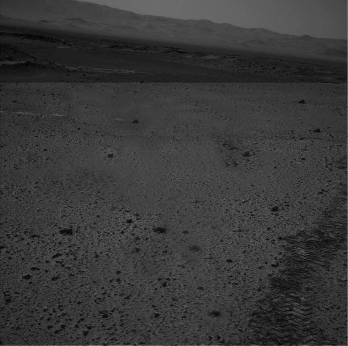
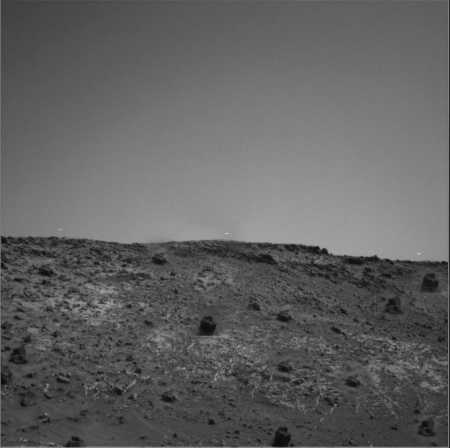
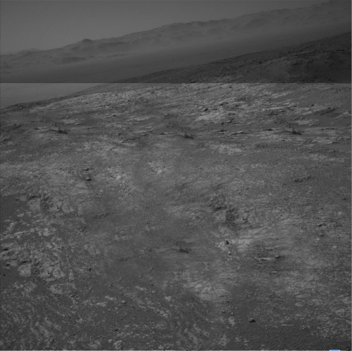
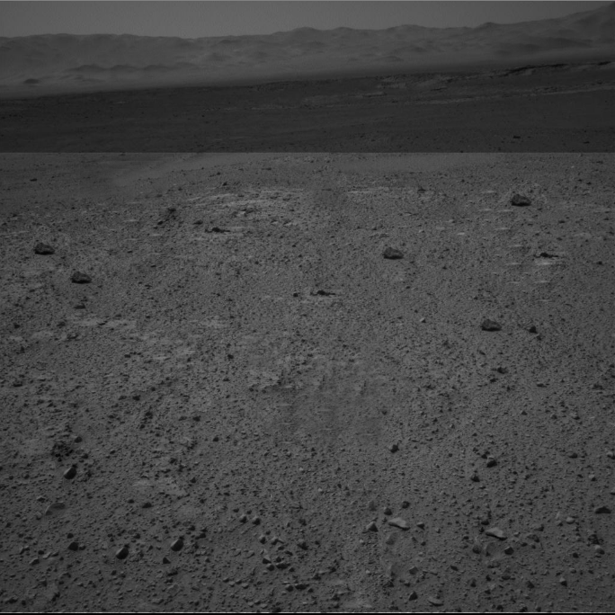
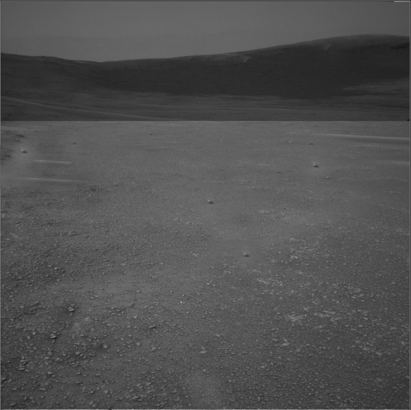
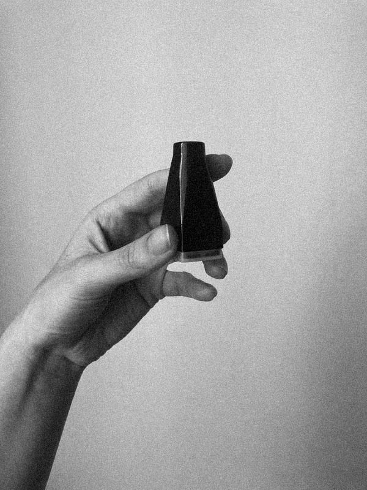
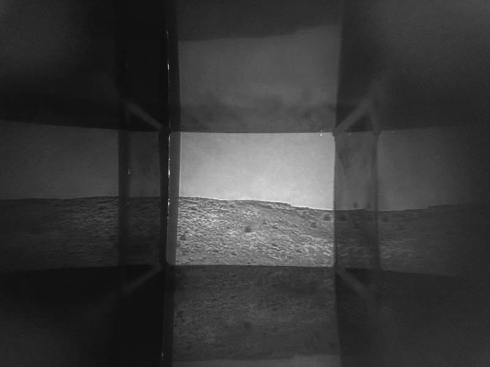

Fig. 01 · Cinco veces la misma piedra · Kennedy · 2020 Fig. 01 · Five times the same stone · Kennedy · 2020
La NASA buscaba colaboradores en todo el mundo para alimentar un archivo gigante de imágenes tomadas por los rovers Spirit y Opportunity en Marte. El fin último de esta clasificación es poder hacer Machine Learning: enseñarle a los rovers qué terrenos son peligrosos y evitar que vuelvan a atascarse en terrenos donde su maquinaria es inútil. Pasar los días en la cuarentena no ha sido fácil, así que acepté trabajar gratis para entrenar máquinas.
He pensado mucho en la propiedad de esas imágenes. En la ficha técnica dice que el derecho lo tiene la NASA; yo solo pienso en la monopolización del universo, en mi imposibilidad de acceder a esas capturas yo misma: ¿cómo hago para ser "dueña" de una imagen sacada en Marte si nunca voy a ir? Tampoco es como que quiera ser dueña de nada: la idea de la propiedad privada incluso para lo que sucede fuera del planeta me asquea. Quizá por eso debería hacer real la Estación Espacial y hacerme cargo de una construcción de imágenes del universo que sean de todas y todos y, al mismo tiempo, de nadie.
El acto de contemplar las estrellas, los planetas y todo lo que acontece más allá de nuestro mundo implica levantar la mirada hacia el cielo, incluso cuando se utilizan dispositivos de observación astronómica. Cuando realizamos este mismo gesto con un dispositivo que no está diseñado para observar el universo, pero que en cierta medida nos muestra eventos que acontecen fuera de nuestro mundo, se produce una translación de sentido tanto del gesto como del dispositivo de visión.
Históricamente, la visualización de nuestras imágenes familiares ha estado mediada por dispositivos que implican el gesto de mirar hacia el cielo, hacia la luz, como los "telescopios" o los visores de fotografías. "Cinco veces la misma piedra" es una colección de cinco imágenes de Marte reconstruidas digitalmente para crear nuevos paisajes, utilizando la repetición como un ejercicio escultórico dentro de la imagen. La observación de esta colección solo puede llevarse a cabo mediante el gesto de observar a través de estos "telescopios", es decir, levantando la mirada hacia el cielo.
NASA was looking for collaborators worldwide to feed a giant archive of images taken by the Spirit and Opportunity rovers on Mars. The ultimate goal of this classification is to enable Machine Learning: teaching rovers which terrains are dangerous and preventing them from getting stuck where their machinery is useless. Getting through the days in quarantine has not been easy, so I accepted to work for free to train machines.
I have thought a lot about the ownership of those images. The technical sheet says that NASA holds the rights; I only think about the monopolization of the universe, about my impossibility of accessing those captures myself: how do I become the "owner" of an image taken on Mars if I will never go there? Not that I want to own anything: the idea of private property even for what happens outside the planet disgusts me. Perhaps that is why I should make the Space Station real and take charge of constructing images of the universe that belong to everyone and, at the same time, to no one.
The act of contemplating the stars, the planets, and everything that happens beyond our world implies looking up to the sky, even when astronomical observation devices are used. When we perform this same gesture with a device that is not designed to observe the universe, but that to some extent shows us events occurring outside our world, a translation of meaning takes place for both the gesture and the viewing device.
Historically, the visualization of our family images has been mediated by devices that involve the gesture of looking up to the sky, towards the light, such as "telescopes" or photograph viewers. "Five times the same stone" is a collection of five images of Mars digitally reconstructed to create new landscapes, using repetition as a sculptural exercise within the image. The observation of this collection can only be carried out through the gesture of observing through these "telescopes", that is, looking up to the sky.
Dentro de las imágenes de Marte se identifican 4 tipos de terrenos: arenoso, consolidado, roca lisa y rocas grandes. El último paso de esta clasificación es poder hacer Machine Learning: enseñarle a los rovers qué terrenos son peligrosos y evitar que vuelvan a atascarse. He decidido seguir el camino del blanco y negro porque es más fácil la identificación y porque hay un deleite en esas imágenes que no me sucede con las de color.Within the Mars images, 4 terrain types are identified: sandy, consolidated, smooth rock, and large rocks. The final step of this classification is to enable Machine Learning: teaching rovers which terrains are dangerous and preventing them from getting stuck again. I decided to follow the black and white path because identification is easier and because there is a delight in those images that I don't experience with color ones.
Durante el trabajo he sacado capturas de pantalla de los paisajes que más me gustan del día. Ser un satélite en tierra que trabaja con otros miles de aburridos en sus casas me hace sentir acompañada; un montón de gente aburrida trabajando gratis para la NASA; yo, por mi parte, me tomo mi pago por derecha con esas capturas. Voy a comenzar con poco: aprovechar este material que la NASA me aporta (Gracias NASA) y modificarlo digitalmente.During the work I took screenshots of the landscapes I liked most each day. Being a satellite on earth working with thousands of other bored people in their homes makes me feel accompanied; a bunch of bored people working for free for NASA; I, for my part, take my payment in kind with those captures. I will start small: take advantage of this material that NASA provides me (Thanks NASA) and modify it digitally.
Inventar un Marte donde se repite 5 veces la misma piedra, que hay unos destellos de luz en el horizonte y que el suelo es casi un patrón repetido ad infinitum; un Marte inventado a partir del Marte que supongo es esa, la de las imágenes. Cinco imágenes de Marte reconstruidas digitalmente para crear nuevos paisajes, utilizando la repetición como un ejercicio escultórico dentro de la imagen.Inventing a Mars where the same stone is repeated 5 times, where there are flashes of light on the horizon and the ground is almost a pattern repeated ad infinitum; an invented Mars based on the Mars that I suppose exists, the one in the images. Five digitally reconstructed Mars images to create new landscapes, using repetition as a sculptural exercise within the image.





Fig. 1–5 · Cinco imágenes de Marte reconstruidas digitalmente · aspect ratio 1:1 Fig. 1–5 · Five digitally reconstructed Mars images · 1:1 aspect ratio
Las imágenes fueron impresas y se construyeron "telescopios" como dispositivos de visión. El gesto de observar a través de estos objetos recrea la translación de sentido: levantar la mirada hacia el cielo para ver lo que acontece fuera de nuestro mundo. La observación de esta colección solo puede llevarse a cabo mediante el gesto de observar a través de estos "telescopios", es decir, levantando la mirada hacia el cielo.The images were printed and "telescopes" were built as viewing devices. The gesture of observing through these objects recreates the translation of meaning: looking up to the sky to see what happens outside our world. The observation of this collection can only be carried out through the gesture of observing through these "telescopes", that is, looking up to the sky.


Fig. 6–7 · Izquierda: telescopio objeto (3:4) · Derecha: vista a través del telescopio (4:3) Fig. 6–7 · Left: telescope object (3:4) · Right: view through the telescope (4:3)